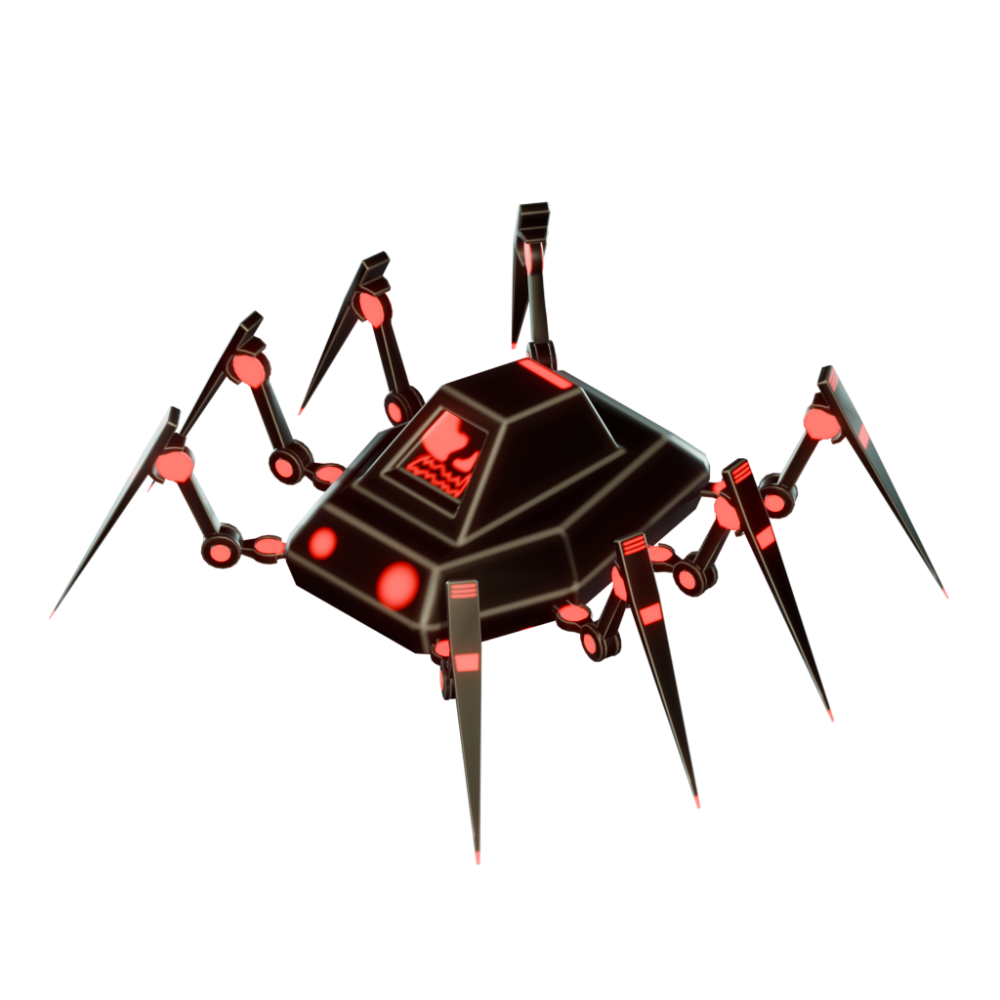
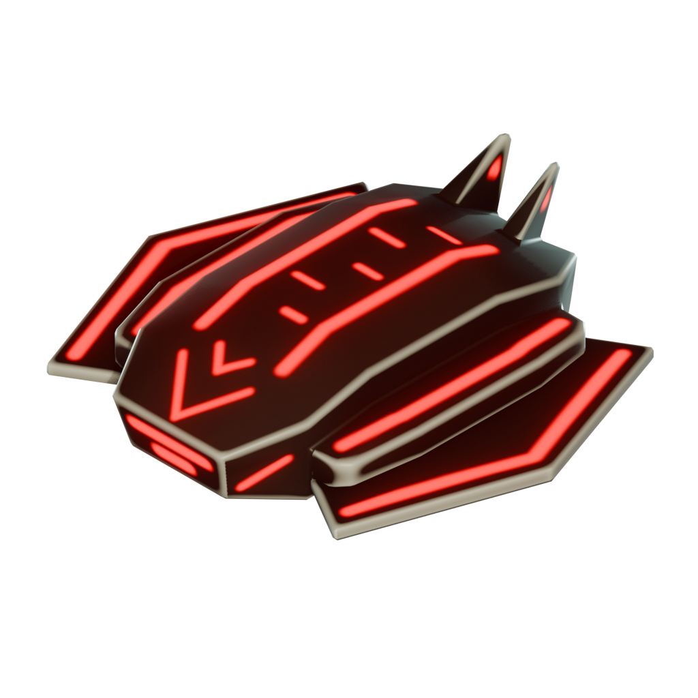
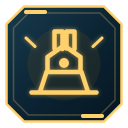
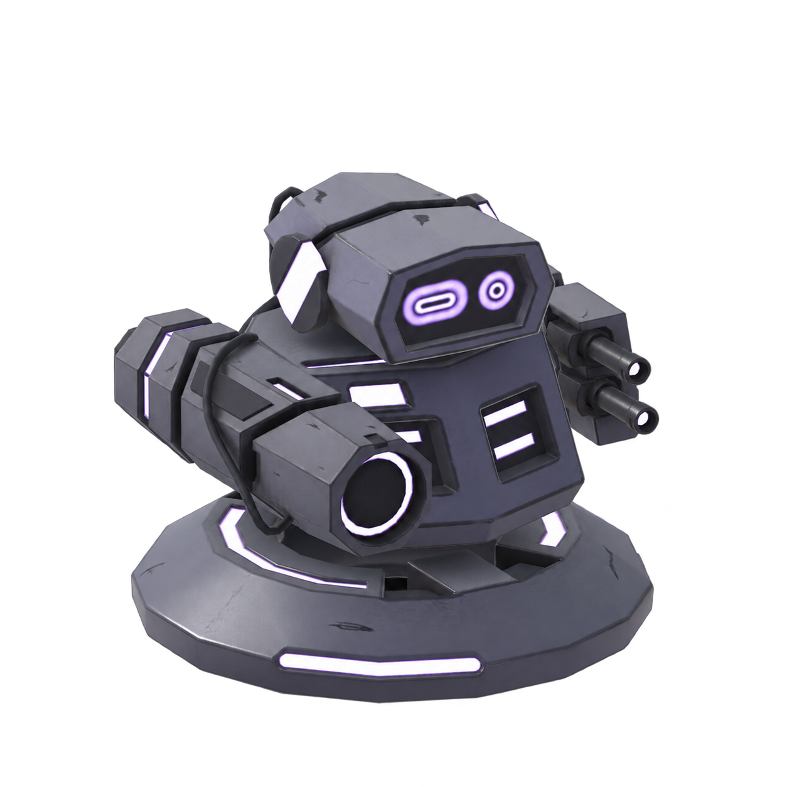

ПОДГОТОВКА К ВОЛНЕ
ВОЛНА 02/ 05
РЕСУРСЫ12
+2 / волна15 м

14
4121 м
02 / 04
Шахта или турель?Шахта даст доход после волны. Турель защитит узел сейчас.
✕ПОДГОТОВКА К ВОЛНЕ
ВОЛНА 02/ 05
РЕСУРСЫ12
+215 м
144
121 м
2 / 4Шахта даёт доход. Турель защищает.
ПОДГОТОВКА К ВОЛНЕ
ВОЛНА 02/ 05
РЕСУРСЫ12
+2
НОЧНАЯ ОБОРОНА
ВОЛНА 05/ 05
⬡
СЕТЕВОЙ УЗЕЛК-7 42%
РЕСУРСЫ6
!СЕТЕВОЙ УЗЕЛ АТАКУЮТ
ОСТАЛОСЬ ВРАГОВ21 / 66
НОЧНАЯ ОБОРОНА
ВОЛНА 05/ 05
⬡
СЕТЕВОЙ УЗЕЛК-7 42%
РЕСУРСЫ6
!СЕТЕВОЙ УЗЕЛ АТАКУЮТ
ОСТАЛОСЬ ВРАГОВ21 / 66
СНАРЯЖЕНИЕ Р-07
◆КРЕДИТЫ1 250
